Package overview
Monte Carlo simulations aim to study the properties of statistical
inference techniques. At its core, a Monte Carlo simulation works
through the application of the techniques to repeatedly drawn samples
from a pre-specified data generating process. The tidyMC
package aims to cover and simplify the whole workflow of running a Monte
Carlo simulation in either an academic or professional setting. Thus,
tidyMC aims to provide functions for the following
tasks:
- Running a Monte Carlo simulation for a user defined function over a
parameter grid using
future_mc() - Summarizing the results by (optionally) user defined summary
functions using
summary.mc() - Creating plots of the Monte Carlo simulation results, which can be
modified by the user using
plot.mc()andplot.summary.mc() - Creating a
LaTeXtable summarizing the results of the Monte Carlo simulation usingtidy_mc_latex()
In the following subsections we will show how you can implement those
tasks using the tidyMC package.
Installing tidyMC
Until now, the tidyMC package is not on CRAN, thus you
need to download the development version from GitHub as follows:
# install.packages("devtools")
devtools::install_github("stefanlinner/tidyMC")Afterwards you can load the package:
Moreover, the following packages will be used in this vignette:
# install.packages("magrittr")
library(magrittr)
# install.packages("ggplot2")
library(ggplot2)
# install.packages("kableExtra")
library(kableExtra)Run your first Monte Carlo Simulation with
future_mc()
future_mc() allows you to run a Monte Carlo simulation
for a user defined function and given parameters. The first argument of
future_mc() is fun which has to be a function
that handles the generation of data, the application of the method of
interest and the evaluation of the result for a single repetition and
parameter combination. future_mc() handles the generation
of loops over the desired parameter grids and the repetition of the
Monte Carlo experiment for each of the parameter constellations.
Consider the following example for fun and note that it
performs the required tasks of generating data, applying the method and
evaluating the results:
# fun
ols_test <-
function(b0, b1, b2, n, sigma2, param_x1, param_x2, inc_x2){
# generation of data
x1 <- rnorm(n = n, mean = param_x1[1], sd = param_x1[2])
x2 <- rnorm(n = n, mean = param_x2[1], sd = param_x2[2])
e <- rnorm(n, sd = sqrt(sigma2))
y <- b0 + b1*x1 + b2*x2 + e
if (inc_x2 == 0){
x2 <- x2 * inc_x2
}
# application of method
estim <- lm(y ~ x1 + x2)
# evaluation of the result for a single repetition and parameter combination
out <- list(b0 = estim$coefficients[1],
b1 = estim$coefficients[2],
b2 = estim$coefficients[3],
sigma2 = var(estim$residuals))
return(out)
}The second argument of future_mc() is
repetitions which should be an integer specifying the
number of Monte Carlo iterations. While the third argument
param_list should be a list whose components are named
after the parameters of fun which should vary for the
different Monte Carlo Simulation and each component is a vector
containing the desired grid values for the parameter. Consider the
following example for param_list and note that its
components are named accordingly to the parameters of
ols_test: n and inc_x2,
respectively:
future_mc() takes care of creating all possible
parameter combinations of param_list and runs the Monte
Carlo simulation over all of these for all possible combinations. If you
don’t want to run a Monte Carlo simulation for every possible parameter
combination you can alternatively define param_table with a
data.frame or data.table containing the
parameter combinations you are interested in.The ...
argument can be used to specify further arguments of fun
which are not contained in param_list. Those arguments will
be held fixed for all parameter combinations. In our OLS example those
arguments are b0, b1, b2,
sigma2, param_x1, and
param_x2.
Moreover, there are four formal requirements that fun
and thus ols_test have to fulfill:
- The arguments of
funwhich are present inparam_listhave to be scalar values. Note that the arguments ofols_testwhich are contained inparam_list_ols:nandinc_x2are scalar values. The remaining arguments ofols_testare allowed to take non-scalar values. - Every variable used inside
funhas either to be defined insidefunor given as an argument through the...argument. - The value returned by
funhas to be a named list. In our example the names of the returned list areb0,b1,b2, andsigma2. - The names of the returned values and those of the arguments
contained in
param_listneed to be different. Moreover, they cannot beparams,repetitionsorsetupas these names are already occupied. Note thatb0,b1,b2, andsigma2are the names of the returned values as well as names of arguments ofols_test. However, none of those arguments is contained inparam_list_ols. If we would add either of those variables toparam_list_olswe would need to change the name of the returned value for the respective variable.
We recommend to even further restrict the return value of
fun to be a named list of scalars. This allows you to use
all comfort functions of the tidyMC package. As you can
see, we did that for ols_test.
The argument parallelisation_plan allows the user to set
a parallelisation plan. While the argument
parallelisation_options allows the user to fine tune
functions, such as furrr::future_map() by
furrr::furrr_options(). The argument seed for
furrr::furrr_options() can be specified in
parallelisation_options following the formal requirements
of its respective documentation. Moreover, the user can also decide not
to run the Monte Carlo in parallel by setting
parallel = FALSE. To construct
parallelisation_plan the user needs to provide a list named
after the arguments of future::plan. The main argument
strategy needs to provide the specific type of
parallelisation the user would like to use and the number of cores which
are used in the function. Some of the options for strategy are:
multisession, multicore and
cluster. We strongly recommend the user to read the
documentation of the future package for a more detailed
instruction of how to set up the different strategies.
As a default (check = TRUE) future_mc()
runs a quick check by running a single test-iteration for each parameter
combination in order to check for possible errors in fun.
If a error occurs the user not only receives the error message but also
the parameter combinations for which the error occurred:
set.seed(101)
first_mc_ols <- future_mc(
fun = ols_test,
repetitions = 1000,
param_list = param_list_ols,
b0 = 1,
b1 = 4,
b2 = 5,
sigma2 = -2,
param_x1 = c(0,5),
param_x2 = c(0,6),
check = TRUE
)
#> Running single test-iteration for each parameter combination...
#> Error in future_mc(fun = ols_test, repetitions = 1000, param_list = param_list_ols, :
#> Function error: NaNs produced
#> At the parameters: n=100, inc_x2=0
#>
#> Function error: NaNs produced
#> At the parameters: n=200, inc_x2=0
#>
#> Function error: NaNs produced
#> At the parameters: n=300, inc_x2=0
#>
#> Function error: NaNs produced
#> At the parameters: n=100, inc_x2=1
#>
#> Function error: NaNs produced
#> At the parameters: n=200, inc_x2=1
#>
#> Function error: NaNs produced
#> At the parameters: n=300, inc_x2=1
#> The attentive reader might already have noticed that we specified
sigma2 = -2 which doesn’t make sense, as the variance of
the error term cannot be negative. This results in a failed check for
all parameter combinations, as this parameter is held fixed for any
combination. Once we correct that mistake, we can run our first Monte
Carlo simulation:
set.seed(101)
first_mc_ols <- future_mc(
fun = ols_test,
repetitions = 1000,
param_list = param_list_ols,
b0 = 1,
b1 = 4,
b2 = 5,
sigma2 = 2, # correctly specify sigma2
param_x1 = c(0,5),
param_x2 = c(0,6),
check = TRUE
)
#> Running single test-iteration for each parameter combination...
#>
#> Test-run successfull: No errors occurred!
#> Running whole simulation: Overall 6 parameter combinations are simulated ...
#>
#> Simulation was successfull!
#> Running time: 00:00:02.43358future_mc returns a list of type mc and
length 11 consisting of a tibble (first_mc_ols$output)
containing the return value of fun for each iteration and
parameter combination. In our case first_mc_ols$output
contains a column for each output b0, b1,
b2, and sigma2, as well as a column for each
parameter in param_list_ols and a column containing the
nice_names of the parameter combinations. Overall the
first_mc_ols$output consists of 6000 rows, i.e., for each
parameter combination 1.000 rows:
first_mc_ols$output
#> # A tibble: 6,000 × 7
#> params n inc_x2 b0 b1 b2 sigma2
#> <chr> <dbl> <dbl> <dbl> <dbl> <dbl> <dbl>
#> 1 n=100, inc_x2=0 100 0 1.28 3.38 NA 776.
#> 2 n=100, inc_x2=0 100 0 -4.27 3.89 NA 773.
#> 3 n=100, inc_x2=0 100 0 5.85 4.36 NA 1130.
#> 4 n=100, inc_x2=0 100 0 1.57 4.69 NA 1067.
#> 5 n=100, inc_x2=0 100 0 -0.802 3.93 NA 873.
#> 6 n=100, inc_x2=0 100 0 1.26 4.44 NA 880.
#> 7 n=100, inc_x2=0 100 0 5.01 4.22 NA 852.
#> 8 n=100, inc_x2=0 100 0 -1.49 3.99 NA 938.
#> 9 n=100, inc_x2=0 100 0 3.07 3.80 NA 779.
#> 10 n=100, inc_x2=0 100 0 2.06 3.73 NA 999.
#> # ℹ 5,990 more rowsIf ols_test would not return a named list of scalars,
but a named list of non-scalars, then first_mc_ols$output
would not contain a column for each output, but a single column
containing the named list of non-scalars for each iteration and
parameter combination.
Moreover, first_mc_ols returns much other information
about the Monte Carlo simulation that can be printed in a dense
representation:
first_mc_ols
#> Monte Carlo simulation results for the specified function:
#>
#> function (b0, b1, b2, n, sigma2, param_x1, param_x2, inc_x2)
#> {
#> x1 <- rnorm(n = n, mean = param_x1[1], sd = param_x1[2])
#> x2 <- rnorm(n = n, mean = param_x2[1], sd = param_x2[2])
#> e <- rnorm(n, sd = sqrt(sigma2))
#> y <- b0 + b1 * x1 + b2 * x2 + e
#> if (inc_x2 == 0) {
#> x2 <- x2 * inc_x2
#> }
#> estim <- lm(y ~ x1 + x2)
#> out <- list(b0 = estim$coefficients[1], b1 = estim$coefficients[2],
#> b2 = estim$coefficients[3], sigma2 = var(estim$residuals))
#> return(out)
#> }
#>
#> The following 6 parameter combinations:
#> # A tibble: 6 × 2
#> n inc_x2
#> <dbl> <dbl>
#> 1 100 0
#> 2 200 0
#> 3 300 0
#> 4 100 1
#> 5 200 1
#> 6 300 1
#> are each simulated 1000 times.
#>
#> The Running time was: 00:00:02.43358
#>
#> Parallel: TRUE
#>
#> The following parallelisation plan was used:
#> $strategy
#> multisession:
#> - args: function (..., workers = availableCores(), lazy = FALSE, rscript_libs = .libPaths(), envir = parent.frame())
#> - tweaked: FALSE
#> - call: NULL
#>
#>
#> Seed: TRUESummarize your results with summary.mc()
If fun returns a named list of scalars the user can use
summary.mc() to summarize all Monte Carlo results. The
first argument of the function is an object of class mc
returned by future_mc(). The next argument
sum_funs determines which summarizing functions will be
used on the simulation results. The functions can be provided for any
combination of: parameter combinations resulting from
param_list, and the outputs of fun. Every
specified function can only take one argument, which is the vector (with
length repetitions) for every output. We will present all
customization options of sum_funs in a step wise
manner.
The first option of summarizing the results is given by just
providing the mc object to summary.mc. In this
case, mean() will be applied to all numeric values and
summary() to all non-numeric data types. When the
summarizing functions return one numeric value (like
mean()) the results are twofold:
First, a single scalar result of the function evaluated using the complete output vector is returned in the first element.
Second, a vector with length
repetitionsof numeric results from the step wise calculation of the function’s result across the output’s vector. We call this resulting vector as the “path” of the summarizing function.
Additionally, to save computation time the parameter
which_path is available to the user who wants to specify
for which outputs the “path” should be calculated. The user needs to
provide a character vector with the output names’. Moreover, the options
"all" (the default) and "none" are also
available.
For the OLS example since all outputs of ols_test are
numeric, the returned object will be a named nested list composed of
four elements named after the nice_names returned by
future_mc(). Each of this elements are itself lists
containing the summarized outputs, i.e. b0,
b1, b2, and sigma2. Lastly each
of these are composed by the “path” and scalar result of
mean().
# Default
summary_default <- summary(first_mc_ols)
summary_default
#> Results for the output b0:
#> n=100, inc_x2=0: 0.9185223
#> n=100, inc_x2=1: 1.003477
#> n=200, inc_x2=0: 1.02396
#> n=200, inc_x2=1: 1.002091
#> n=300, inc_x2=0: 1.000223
#> n=300, inc_x2=1: 1.002196
#>
#>
#> Results for the output b1:
#> n=100, inc_x2=0: 3.985091
#> n=100, inc_x2=1: 4.000044
#> n=200, inc_x2=0: 4.005565
#> n=200, inc_x2=1: 4.000216
#> n=300, inc_x2=0: 4.001195
#> n=300, inc_x2=1: 4.000031
#>
#>
#> Results for the output b2:
#> n=100, inc_x2=0:
#> [1] NA
#>
#> n=100, inc_x2=1: 5.001864
#> n=200, inc_x2=0:
#> [1] NA
#>
#> n=200, inc_x2=1: 5.001091
#> n=300, inc_x2=0:
#> [1] NA
#>
#> n=300, inc_x2=1: 5.000132
#>
#>
#> Results for the output sigma2:
#> n=100, inc_x2=0: 892.7561
#> n=100, inc_x2=1: 1.958776
#> n=200, inc_x2=0: 895.652
#> n=200, inc_x2=1: 1.982949
#> n=300, inc_x2=0: 900.6887
#> n=300, inc_x2=1: 1.983788
#>
#>
str(summary_default[[1]])
#> List of 4
#> $ b0 :List of 2
#> ..$ mean : num 0.919
#> ..$ mean_over_reps: num [1:1000] 1.278 -1.497 0.954 1.108 0.726 ...
#> $ b1 :List of 2
#> ..$ mean : num 3.99
#> ..$ mean_over_reps: num [1:1000] 3.38 3.63 3.88 4.08 4.05 ...
#> $ b2 :List of 1
#> ..$ mean: num NA
#> $ sigma2:List of 2
#> ..$ mean : num 893
#> ..$ mean_over_reps: num [1:1000] 776 774 893 936 923 ...This nested list structure should give an idea of the reach and
flexibility the sum_funs argument is allowed to have, since
the user can specify a function for each element in this list.
For an intermediate level of customization, the user can provide a
combination of summarizing functions for every output, which will be
used for all parameter combination. In the case of the OLS example, if
we want to apply mean() on all estimated coefficients, but
we want to use var() on the MC results of
sigma2, the sum_funs should have the following
structure:
# summarizing output for each parameter combination with one combination
sum_funs_ols <- list(b0 = mean, b1 = mean , b2 = mean, sigma2 = var)Moreover, the user can specify any function provided it takes the output vector as only available argument.
Lastly for the last level of customization, a nested list named after
the nice_names where every element follows the structure of
the last example (components named after the outputs and each component
is a function) can be specified. We present an example for this:
quantile_sum <- function(x) quantile(x, probs = 0.75)
# summarizing output differently for different parameter combinations
sum_funs2 <-
list(
list(b0 = quantile_sum, b1 = min, b2 = min, sigma2 = mean),
list(b0 = mean, b1 = quantile_sum, b2 = mean, sigma2 = mean),
list(b0 = median, b1 = median, b2 = median, sigma2 = mean),
list(b0 = max, b1 = max, b2 = max, sigma2 = mean),
list(b0 = min, b1 = min, b2 = min, sigma2 = quantile_sum),
list(b0 = mean, b1 = mean, b2 = quantile_sum, sigma2 = quantile_sum)
)
names(sum_funs2) <- first_mc_ols$nice_names
summary_out_param_spec <- summary(first_mc_ols, sum_funs = sum_funs2)We would like to reiterate that the provided summary functions are
not restricted regarding the complexity of their return value. However,
the path of the summarized output over all simulation repetitions is
only returned if the provided summary functions return a single numeric
value. Thus, the following comfort functions
plot.summary.mc() and tidy_mc_latex() will
only work in this specific case.
Plot your Monte Carlo Simulation with plot.mc() and
plot.summary.mc()
If fun returns a named list of scalars the user can use
plot.mc() to generate a list of objects of class
gg and ggplot2 for all Monte Carlo results.
The first argument of the function is an object of class mc
returned by future_mc(). Using the argument
plot the user can indicate whether the generated plots
should be printed immediately or only returned as a list. The list will
contain one plot for each output of fun comparing the
results of the different simulation setups. In general,
plot.mc() generates density plots for numeric outputs and
bar plots for non-numeric outputs. In our example a plot for
b0, b1, b2, and
sigma2 will be returned in a list of length four and as
b0, b1, b2, and
sigma2 are all numeric outputs plot.mc() will
return density plots for each of those:
As the single list elements are of class gg and
ggplot2, we can easily customize and extend the single
plots using familiar ggplot2 commands:
mc_ols_plot$b1 +
ggplot2::geom_vline(xintercept = 4, col = "red") +
ggplot2::theme_minimal()
When creating the plots the user can also subset the setups which
he/she would like to see in the plots using the
first_mc_ols$nice_names in the function argument
which_setup, or a named list in
parameter_comb. The single components of the list have to
be named after the parameters specified in param_list and
contain vectors specifying the values of the parameters to filter by. In
the ols example we can filter by the parameters n and
inc_x2:
# subsetting by nice_names
mc_ols_plot_subset1 <-
plot(first_mc_ols, plot = FALSE, which_setup = first_mc_ols$nice_names[4:6])
#subsetting by parameter values
mc_ols_plot_subset2 <-
plot(first_mc_ols, plot = FALSE, parameter_comb = list(inc_x2 = 1))
mc_ols_plot_subset1$sigma2Thus, if the user wants distinct plots for every parameter
combination, one needs to subset the plot for any single setup in
first_mc_ols$nice_names.
Finally, you can also plot the simulation results for several
parameter combination in one single plot by specifying the argument
join with the respective
first_mc_ols$nice_names:
mc_ols_plot_joint <- plot(first_mc_ols, plot = FALSE,
join = first_mc_ols$nice_names)
mc_ols_plot_joint$b2
#> Warning: Removed 3000 rows containing non-finite values
#> (`stat_density()`).Please be aware that the only one of the three arguments
which_setup, parameter_comb, and
join can be specified at the same time.
If the provided summary functions in summary.mc() return
a single numeric value and thus a path of the summarized output over all
simulation repetitions is returned, the user can use
plot.summary.mc() to plot those paths. The first argument
of the function is an object of class summary.mc returned
by summary.mc(). Just as plot.mc(),
plot.summary.mc() returns a list of objects of class
gg and ggplot2. The list will contain one line
plot for each output of fun displaying the paths of the
results of the different simulation setups. The arguments
plot, which_setup,
parameter_comb, and join can be specified the
same way as for plot.mc:
sum_mc_plot <- plot(summary_default, plot = FALSE)
sum_mc_plot$b1 +
ggplot2::geom_vline(xintercept = 100, col = "red") +
ggplot2::theme(axis.text.x = element_text(angle = 45,
hjust = 0.1,
vjust = 0.2))
sum_mc_plot_subset1 <-
plot(summary_default,
plot = FALSE,
which_setup = first_mc_ols$nice_names[4:6])
sum_mc_plot_subset2 <-
plot(summary_default,
plot = FALSE,
parameter_comb = list(inc_x2 = 1))
sum_mc_plot_subset2$b1
sum_mc_plot_joint <-
plot(summary_default, plot = FALSE, join = first_mc_ols$nice_names[4:6])
sum_mc_plot_joint$b1Create a LaTeX table of your results with
tidy_mc_latex()
Using tidy_mc_latex the user can present the results
from future_mc directly into a LaTeX document
using all the benefits from the kableExtra package. The
first and main argument x needed by
tidy_mc_latex is a summary.mc object obtained
from summary.mc(). To present the results in a
comprehensive manner the function requires that all summarized outputs
in summary.mc be scalar numeric results for all parameter
combinations. In case, the summarizing function returns more than one
argument then this will be presented in the table as an NA
value. The second argument of the function is
repetitions_set which allows the user to see the certain
values of the “path” of the summarized results of fun. To
illustrate this we use the MC results for the OLS example:
tidy_mc_latex(
x = summary(first_mc_ols),
repetitions_set = c(10, 1000)
) %>%
print()
#> \begin{table}
#>
#> \caption{\label{tab:unnamed-chunk-19}Monte Carlo simulations results}
#> \centering
#> \begin{tabular}[t]{cccccc}
#> \toprule
#> n & inc_x2 & b0 & b1 & b2 & sigma2\\
#> \midrule
#> \addlinespace[0.3em]
#> \multicolumn{6}{l}{\textbf{N = 10}}\\
#> \hspace{1em}100 & 0 & 1.354 & 4.043 & NA & 906.484\\
#> \hspace{1em}100 & 1 & 0.989 & 4.011 & 4.999 & 1.915\\
#> \hspace{1em}200 & 0 & 2.326 & 4.156 & NA & 871.074\\
#> \hspace{1em}200 & 1 & 1.025 & 3.996 & 5.002 & 2.015\\
#> \hspace{1em}300 & 0 & 0.083 & 4.006 & NA & 950.222\\
#> \hspace{1em}300 & 1 & 0.989 & 3.997 & 4.997 & 2.058\\
#> \addlinespace[0.3em]
#> \multicolumn{6}{l}{\textbf{N = 1000}}\\
#> \hspace{1em}100 & 0 & 0.919 & 3.985 & NA & 892.756\\
#> \hspace{1em}100 & 1 & 1.003 & 4.000 & 5.002 & 1.959\\
#> \hspace{1em}200 & 0 & 1.024 & 4.006 & NA & 895.652\\
#> \hspace{1em}200 & 1 & 1.002 & 4.000 & 5.001 & 1.983\\
#> \hspace{1em}300 & 0 & 1.000 & 4.001 & NA & 900.689\\
#> \hspace{1em}300 & 1 & 1.002 & 4.000 & 5.000 & 1.984\\
#> \bottomrule
#> \multicolumn{6}{l}{\textsuperscript{} Total repetitions = 1000, total parameter}\\
#> \multicolumn{6}{l}{combinations = 6}\\
#> \end{tabular}
#> \end{table}The resulting table is composed of two panels, which corresponds to
the length of repetitions_set. In them the columns
correspond to the results of the summarizing functions for
b0, b1, b2, and
sigma2, and the rows correspond to specific combinations of
the parameters provided in parameter_list. The footnote in
the table shows the number of repetitions and the total parameter
combinations provided to future_mc.
Moreover, the next three arguments in tidy_mc_latex are
comfort options to select which results of summary.mc
depending on the parameter combinations will be presented in the table.
On one hand, The argument which_setup allows the user to
make use of the nice_names of the parameter combinations in
the returned object by future_mc() to subset the rows in
the table. On the other hand, the argument parameter_comb
is used to directly filter the parameters by their values. This argument
requires a named list, containing vector or scalar values of all
parameters to be filtered from. The user must only provide one of this
arguments at a time. We show how to make use of both parameters to
subset the rows of table for \(n =
100\) and \(inc_{x2}=1\):
tidy_mc_latex(
x = summary(first_mc_ols),
repetitions_set = c(10, 1000),
which_setup = first_mc_ols$nice_names[1]) %>%
print()
#> \begin{table}
#>
#> \caption{\label{tab:unnamed-chunk-20}Monte Carlo simulations results}
#> \centering
#> \begin{tabular}[t]{ccccc}
#> \toprule
#> n & inc_x2 & b0 & b1 & sigma2\\
#> \midrule
#> \addlinespace[0.3em]
#> \multicolumn{5}{l}{\textbf{N = 10}}\\
#> \hspace{1em}100 & 0 & 1.354 & 4.043 & 906.484\\
#> \addlinespace[0.3em]
#> \multicolumn{5}{l}{\textbf{N = 1000}}\\
#> \hspace{1em}100 & 0 & 0.919 & 3.985 & 892.756\\
#> \bottomrule
#> \multicolumn{5}{l}{\textsuperscript{} Total repetitions = 1000, total}\\
#> \multicolumn{5}{l}{parameter combinations = 6}\\
#> \end{tabular}
#> \end{table}
tidy_mc_latex(
x = summary(first_mc_ols),
repetitions_set = c(10, 1000),
parameter_comb = list(n = 100, inc_x2 = 1)) %>%
print()
#> \begin{table}
#>
#> \caption{\label{tab:unnamed-chunk-20}Monte Carlo simulations results}
#> \centering
#> \begin{tabular}[t]{cccccc}
#> \toprule
#> n & inc_x2 & b0 & b1 & b2 & sigma2\\
#> \midrule
#> \addlinespace[0.3em]
#> \multicolumn{6}{l}{\textbf{N = 10}}\\
#> \hspace{1em}100 & 1 & 0.989 & 4.011 & 4.999 & 1.915\\
#> \addlinespace[0.3em]
#> \multicolumn{6}{l}{\textbf{N = 1000}}\\
#> \hspace{1em}100 & 1 & 1.003 & 4.000 & 5.002 & 1.959\\
#> \bottomrule
#> \multicolumn{6}{l}{\textsuperscript{} Total repetitions = 1000, total parameter}\\
#> \multicolumn{6}{l}{combinations = 6}\\
#> \end{tabular}
#> \end{table}The user can also subset the outputs of the original function
(columns in the table) using the parameter which_out. This
is done using a character vector with the names of the outputs, e.g. to
only show the columns for b0 and sigma2 the
user needs to set which_out = c("b0", "sigma2").
Lastly, by providing a named list to the argument
kable_options, the user can change all arguments of the
underlying function kable::kbl(). The names of the list
have to be equal to the names of the arguments of the function and the
contents of every element also has to fulfill its requirements. We
provide an example of how this list should be constructed, but for
optimal usage we strongly recommend the user to see the documentation of
the kable::kbl() function.
To allow for further customization the returned object by
tidy_mc_latex is of class knitr_kable,
therefore the user can utilize most functions from the
kableExtra package in the standard tidyverse manner. For
example:
tidy_mc_latex(summary(first_mc_ols),
repetitions_set = c(10, 1000),
kable_options = list(
col.names = c("Number of observations",
"$x_2$ included or not",
"$\\beta_0$", "$\\beta_1$",
"$\\beta_2$", "$s^2$"),
caption = "Ommited variable bias MC results"
)
) %>%
kableExtra::kable_styling(latex_options = "HOLD_position") %>%
print()
#> \begin{table}[H]
#>
#> \caption{\label{tab:unnamed-chunk-21}Ommited variable bias MC results}
#> \centering
#> \begin{tabular}[t]{cccccc}
#> \toprule
#> Number of observations & $x_2$ included or not & $\beta_0$ & $\beta_1$ & $\beta_2$ & $s^2$\\
#> \midrule
#> \addlinespace[0.3em]
#> \multicolumn{6}{l}{\textbf{N = 10}}\\
#> \hspace{1em}100 & 0 & 1.354 & 4.043 & NA & 906.484\\
#> \hspace{1em}100 & 1 & 0.989 & 4.011 & 4.999 & 1.915\\
#> \hspace{1em}200 & 0 & 2.326 & 4.156 & NA & 871.074\\
#> \hspace{1em}200 & 1 & 1.025 & 3.996 & 5.002 & 2.015\\
#> \hspace{1em}300 & 0 & 0.083 & 4.006 & NA & 950.222\\
#> \hspace{1em}300 & 1 & 0.989 & 3.997 & 4.997 & 2.058\\
#> \addlinespace[0.3em]
#> \multicolumn{6}{l}{\textbf{N = 1000}}\\
#> \hspace{1em}100 & 0 & 0.919 & 3.985 & NA & 892.756\\
#> \hspace{1em}100 & 1 & 1.003 & 4.000 & 5.002 & 1.959\\
#> \hspace{1em}200 & 0 & 1.024 & 4.006 & NA & 895.652\\
#> \hspace{1em}200 & 1 & 1.002 & 4.000 & 5.001 & 1.983\\
#> \hspace{1em}300 & 0 & 1.000 & 4.001 & NA & 900.689\\
#> \hspace{1em}300 & 1 & 1.002 & 4.000 & 5.000 & 1.984\\
#> \bottomrule
#> \multicolumn{6}{l}{\textsuperscript{} Total repetitions = 1000, total parameter combinations = 6}\\
#> \end{tabular}
#> \end{table}